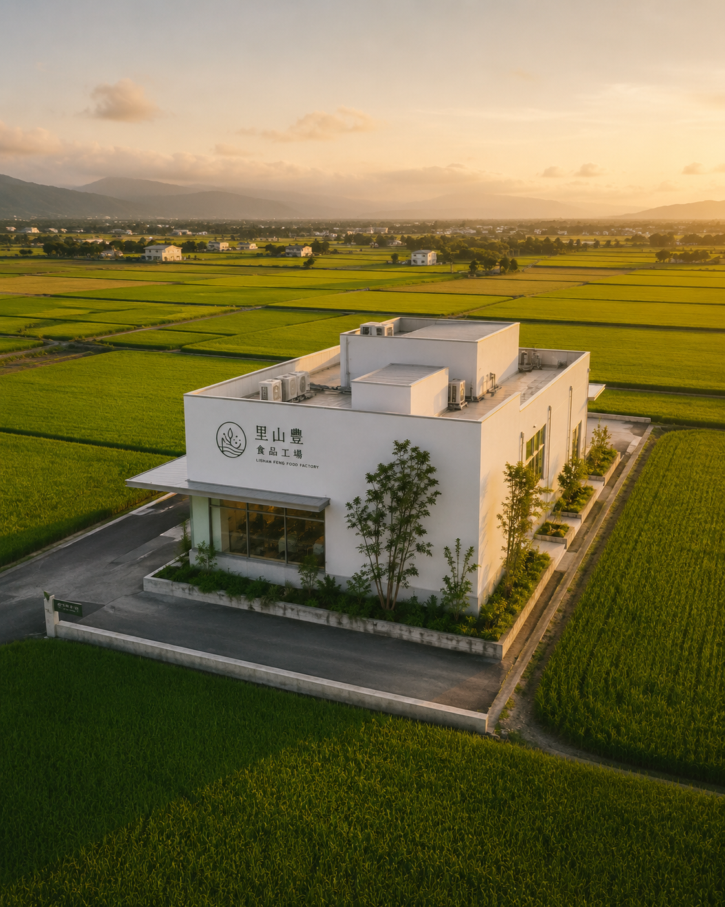
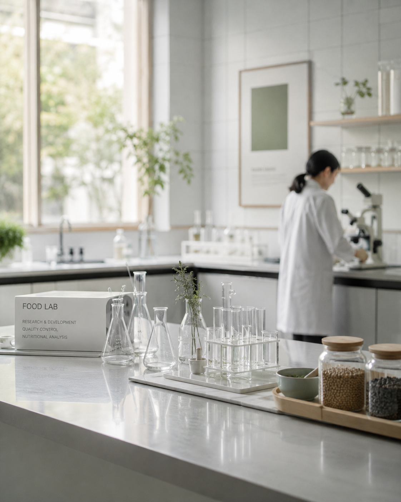
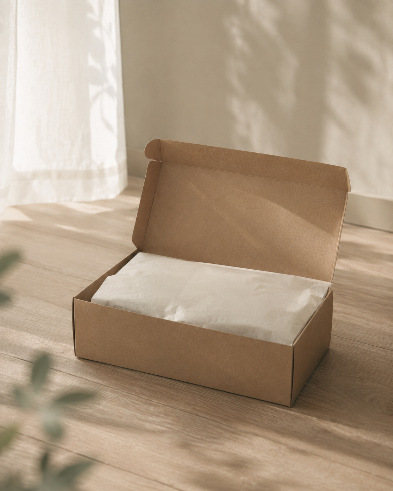

沐研萃以自家食品工廠為核心，將原料驗收、配方調製、環境清潔、第三方檢驗與冷鏈配送串成可追溯的流程。
每一批配方進入產線前，都會先確認原料文件、批號與保存狀態。製造區依照清潔、調配、包裝、暫存分流，降低交叉污染風險。
我們不把工廠當成背景故事，而是把它做成家屬可以理解、可以追問、可以檢查的食安流程。
檢查供應商文件、產地、規格與批號，必要項目留存紀錄。
調配、包裝、暫存分流管理，降低交叉污染與人員動線干擾。
每批配方保留製造、檢驗、包裝與出貨資訊，便於日後追溯。
依商品保存條件安排包材與配送方式，縮短等待與暴露時間。

位於雲林麥寮，自有產線負責配方製造與包裝管理。

每批配方送驗，重金屬、微生物與營養標示依品項規劃檢查。

出貨前確認批號與包裝完整，讓商品穩定送達家中廚房。